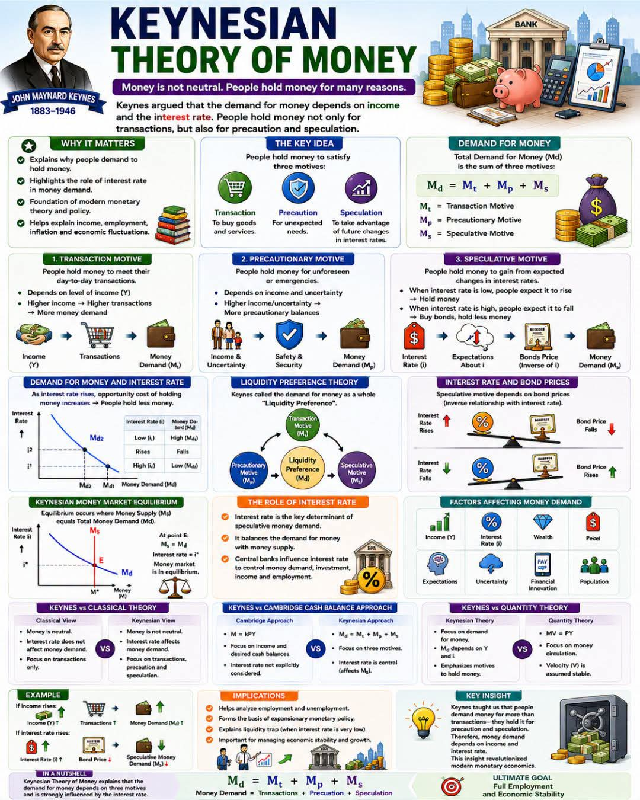

Hujan turun rintik-rintik membasahi aspal basah di kawasan Dago, Bandung. Udara dingin khas dataran tinggi kota ini menyelinap masuk melalui celah-celah jendela kaca sebuah kedai kopi bergaya industrial. Aroma biji kopi Arabika yang baru digiling bercampur dengan petrikor, menciptakan suasana yang melankolis namun memicu produktivitas. Di salah satu sudut kedai, di bawah pendar lampu filamen yang hangat, empat orang duduk mengelilingi sebuah meja kayu ek yang kokoh. Di atas meja tersebut berserakan tablet, buku catatan, secangkir espresso yang mulai mendingin, dan sebuah diagram rumit yang mencerminkan isi kepala mereka.
Mereka berempat bukanlah sekumpulan anak muda yang sekadar menghabiskan waktu luang. Citra, Arya, Bima, dan Dimas adalah alumni dari salah satu institut teknologi paling bergengsi di kota ini. Lulusan Teknik Industri yang terbiasa melihat dunia bukan dari sudut pandang acak, melainkan sebagai sebuah sistem yang saling terhubung. Bagi mereka, setiap variabel kehidupan, mulai dari waktu antrean kendaraan di perempatan Pasteur hingga fluktuasi harga saham, dapat dimodelkan, dioptimasi, dan diukur.
Citra, satu-satunya wanita di meja itu, duduk dengan postur tegak. Kacamata berbingkai tipis bertengger di hidungnya. Sebagai seorang konsultan supply chain finance di sebuah perusahaan multinasional, otaknya selalu berputar menghitung efisiensi aliran dana dari hulu ke hilir. Di hadapannya, Arya sedang menatap layar laptopnya dengan dahi berkerut, merapikan barisan kode simulasi stokastik. Bima, yang mengenakan jaket tebal, sibuk mengaduk teh kamomilnya, selalu waspada dan penuh perhitungan. Sementara Dimas, sosok yang paling eksentrik dengan kemeja linen kasual, sedang menggambar grafik tren pasar dengan penuh semangat di udara menggunakan pena mahalnya.
Malam itu, agenda mereka bukanlah reuni biasa. Mereka sedang membedah masalah likuiditas perusahaan rintisan (startup) yang sedang mereka bangun bersama: sebuah platform integrasi rantai pasok cerdas untuk UMKM manufaktur di Jawa Barat. Perdebatan berkisar pada satu pertanyaan klasik yang telah menghantui para ekonom dan insinyur selama berabad-abad: Berapa banyak uang tunai yang harus mereka tahan, dan berapa banyak yang harus diinvestasikan atau dibelanjakan untuk ekspansi?
"Kita terlalu konservatif," cetus Dimas, memecah keheningan yang sempat tercipta. Ia menunjuk ke arah proyeksi arus kas di layar laptop Arya. "Lihat suku bunga saat ini. Sangat rendah. Menyimpan uang tunai di bank atau instrumen jangka pendek saat ini tidak masuk akal secara strategis. Uang itu tidak bekerja. Uang itu diam, dan dalam teori sistem, segala sesuatu yang diam dan tidak menambah nilai adalah sebuah waste atau pemborosan."
Bima menggeleng pelan, ekspresinya skeptis. Sebagai manajer operasional yang berurusan dengan ketidakpastian harian, ia memiliki pandangan berbeda. "Dimas, kau lupa bahwa kita tidak hidup di dunia deterministik. Rantai pasok itu sangat stokastik. Bulan lalu saja kita menghadapi gangguan pengiriman bahan baku dari supplier lapis kedua di Cikarang. Kalau kita tidak punya cadangan likuiditas, operasional bisa lumpuh. Cash is king saat krisis terjadi."
Arya berhenti mengetik dan menoleh. "Kedua poin kalian valid secara isolasi. Namun, sistem kita tidak bekerja dalam isolasi. Kita membutuhkan model optimasi."
Citra, yang sejak tadi menyimak dalam diam, akhirnya menghela napas. Ia mengambil secarik kertas catatan kosong dan sebuah pena. Baginya, setiap perdebatan kompleks dapat disederhanakan melalui lensa makroekonomi klasik yang dikawinkan dengan rekayasa sistem.
"Kalian berdua," ucap Citra dengan nada tenang namun berwibawa, membuat ketiga pria itu memusatkan perhatian padanya, "sebenarnya sedang memperdebatkan sesuatu yang sudah diselesaikan oleh John Maynard Keynes hampir seabad yang lalu dalam Teori Preferensi Likuiditas (Liquidity Preference Theory). Apa yang Bima khawatirkan dan apa yang Dimas kejar, semuanya memiliki persamaan matematisnya."
Citra mulai menggambar di atas kertas tersebut. Goresan penanya tegas, memetakan aliran pikiran yang terstruktur sempurna, ciri khas seorang sarjana teknik industri.

"Keynes," lanjut Citra, matanya berbinar saat menjelaskan konsep, "berargumen bahwa uang bukanlah sekadar entitas netral. Permintaan terhadap uang, atau mengapa orang dan entitas bisnis seperti perusahaan kita ingin menahan uang tunai, bergantung pada tingkat pendapatan dan suku bunga. Ini bertentangan dengan pandangan klasik murni yang menganggap uang hanya berfungsi untuk memfasilitasi transaksi."
Citra menuliskan sebuah persamaan sederhana namun fundamental di tengah kertas, yang kemudian Arya proyeksikan kembali ke dalam dokumen digitalnya menggunakan format LaTeX agar lebih rapi.
"Biar kujelaskan," kata Citra. "Persamaan ini merangkum total permintaan uang ($M_d$). Ia terbentuk dari tiga motif utama. Pertama, $M_t$ adalah Motif Transaksi (Transaction Motive). Kedua, $M_p$ adalah Motif Berjaga-jaga (Precautionary Motive). Dan ketiga, $M_s$ adalah Motif Spekulasi (Speculative Motive)."
Arya mengangguk perlahan. "Mari kita bedah ini dalam konteks startup kita. Motif Transaksi, $M_t$. Ini adalah uang yang mutlak kita butuhkan untuk operasi sehari-hari. Bayar sewa server AWS, gaji pegawai, biaya logistik. Ini linier atau sangat bergantung pada tingkat transaksi harian kita. Semakin tinggi volume bisnis kita, semakin tinggi $M_t$ yang kita butuhkan."
"Tepat," sahut Citra. "Secara agregat, Keynes mengasumsikan motif transaksi sangat bergantung pada pendapatan ($Y$). Jika pendapatan naik, transaksi naik, maka permintaan uang untuk transaksi juga akan naik. Ini tidak terlalu dipengaruhi oleh suku bunga."
Bima mencondongkan tubuhnya ke depan. "Lalu bagaimana dengan kekhawatiranku? Uang yang kita simpan untuk mengantisipasi ketidakpastian lead time bahan baku atau denda keterlambatan pengiriman?"
"Itulah Motif Berjaga-jaga, $M_p$," jelas Citra. "Uang dipegang untuk menghadapi kejadian yang tidak terduga atau darurat. Dalam teknik industri, kita sering menyebutnya sebagai Safety Stock, tapi ini dalam bentuk likuiditas finansial. Semakin tinggi tingkat ketidakpastian dalam sistem rantai pasok kita, semakin besar saldo berjaga-jaga yang ingin kita tahan. Sama seperti $M_t$, motif ini juga dipengaruhi kuat oleh ukuran pendapatan atau skala operasi kita."
Bima tampak puas mendengarnya. "Jadi, keputusanku untuk menahan buffer cash itu valid secara teori. Ketidakpastian logistik global saat ini sangat tinggi. Variabilitas adalah musuh efisiensi, dan likuiditas adalah alat untuk meredam variabilitas itu."
Dimas memutar penanya dengan tidak sabar. "Oke, transaksi dan berjaga-jaga, aku paham. Itu biaya untuk bernapas dan biaya untuk memakai asuransi. Tapi perusahaan tidak akan bertumbuh eksponensial kalau kita hanya bernapas dan berhati-hati. Di mana ruang untuk agresivitas kapital?"
Citra tersenyum tipis, menatap Dimas. "Di situlah Keynes memperkenalkan $M_s$, Motif Spekulasi. Dan di sinilah suku bunga ($i$) memainkan peran krusialnya."
Citra kembali menulis di kertasnya. Ia menggambar sebuah kurva dengan sumbu vertikal sebagai Suku Bunga ($i$) dan sumbu horizontal sebagai Permintaan Uang untuk Spekulasi ($M_s$). Kurva itu berbentuk melengkung ke bawah dari kiri atas ke kanan bawah.
"Keynes merevolusi cara pandang ekonomi dengan menyatakan bahwa orang memegang uang tidak hanya untuk dibelanjakan, tetapi juga untuk mengambil keuntungan dari ekspektasi perubahan suku bunga di masa depan," terang Citra. "Ini adalah inti dari apa yang kita perdebatkan dari tadi, Dimas."
"Coba jelaskan mekanismenya secara teknis," potong Arya, jiwa analisnya menuntut detail yang lebih presisi.
"Sederhananya begini," Citra menunjuk grafik kurva permintaannya. "Ada hubungan terbalik yang fundamental antara suku bunga dan harga instrumen investasi berbasis pendapatan tetap, sebut saja obligasi. Ketika suku bunga ($i$) naik, harga obligasi turun. Sebaliknya, ketika suku bunga turun, harga obligasi naik."
Citra melanjutkan dengan intonasi yang lebih tajam. "Jika saat ini suku bunga sangat rendah, seperti yang kau katakan tadi Dimas, orang-orang atau entitas rasional akan berekspektasi bahwa di masa depan suku bunga pasti akan naik kembali ke tingkat normalnya. Nah, jika suku bunga diekspektasikan naik, artinya harga obligasi diekspektasikan akan turun. Jika kau memegang obligasi sekarang, kau akan mengalami capital loss di masa depan."
Dimas terdiam, mencoba memproses logika tersebut ke dalam rencananya.
"Maka dari itu," Citra menyimpulkan, "saat suku bunga sedang sangat rendah, orang akan memilih untuk memegang uang tunai (menahan likuiditas) daripada membeli obligasi. Mereka menunggu saat yang tepat. Inilah sebabnya mengapa permintaan uang untuk spekulasi ($M_s$) sangat tinggi saat suku bunga rendah. Sebaliknya, ketika suku bunga sedang tinggi, orang percaya suku bunga akan segera turun, yang berarti harga obligasi akan naik. Maka mereka akan melepas uang tunainya untuk membeli obligasi hari ini agar untung esok hari. Saat itulah permintaan uang tunai turun."
"Inilah yang Keynes sebut sebagai Jebakan Likuiditas (Liquidity Trap)," Arya menimpali, ia kini membuka jurnal makroekonomi di layar tabletnya. "Sebuah situasi di mana suku bunga sudah sangat rendah sehingga tambahan suplai uang ke dalam sistem ekonomi tidak lagi mampu menurunkan suku bunga atau menstimulasi investasi. Semua orang hanya menimbun uang tunai."
Malam semakin larut di Dago. Hujan perlahan mereda, menyisakan embun yang menempel di kaca kedai kopi. Namun diskusi di meja kayu ek itu semakin memanas, perlahan menuju sebuah pencerahan.
"Jadi, apa implikasi praktisnya bagi struktur permodalan perusahaan kita?" tanya Bima, berusaha menarik teori makro tersebut kembali ke lantai pabrik operasional mereka.
Citra merapikan kacamata di pangkal hidungnya. "Kita harus memodelkan portofolio likuiditas kita layaknya kita memodelkan sistem inventori yang multi-eselon. Permintaan uang total kita, $M_d$, harus dikelola secara dinamis."
Ia kembali mencoret di atas kertas, kali ini menggabungkan semua variabel ke dalam satu kesatuan sistem mekanis.
"Pertama, alokasi untuk Motif Transaksi ($M_t$). Ini non-negotiable. Kita harus memetakan arus kas keluar harian kita, dikurangi siklus konversi kas dari klien. Gunakan algoritma forecasting moving average yang Arya buat untuk memastikan saldo ini selalu presisi, tidak kurang, dan tidak berlebih. Efisiensi persis pada batas kendali (control limit)."
Arya mengangguk cepat. "Aku bisa menambahkan parameter variansi pada modelku untuk mengakomodasi ini."
"Kedua," lanjut Citra, menatap Bima. "Untuk Motif Berjaga-jaga ($M_p$), kita tidak boleh sekadar menebak. Kita harus mengukur tingkat ketidakpastian. Kita gunakan standar deviasi dari lead time rantai pasok kita. Jika volatilitas logistik meningkat, model secara otomatis merekomendasikan injeksi likuiditas tambahan ke cadangan buffer kita. Ini adalah sistem pengaman dinamis."
Bima tersenyum puas. Pendekatan analitik berbasis probabilitas selalu bisa menenangkan saraf-saraf kecemasannya.
"Dan terakhir," Citra beralih pada Dimas, "Motif Spekulasi ($M_s$). Dimas, kau benar bahwa kita harus mengkapitalisasi pergerakan pasar. Tapi kita tidak boleh berjudi buta. Keputusan kita untuk mengubah kas menjadi aset investasi jangka panjang atau ekspansi aset tetap, harus bergantung pada sensitivitas suku bunga dan ekuilibrium pasar uang. Kapan titik ekuilibrium itu tercapai?"
"Kita berada pada ekuilibrium ketika uang yang kita miliki, sama dengan fungsi total permintaan uang kita terhadap suku bunga dan pendapatan saat ini. Jika Internal Rate of Return (IRR) dari proyek ekspansi yang kau usulkan secara signifikan melampaui suku bunga ekuilibrium saat ini ditambah premi risiko operasi kita, maka kita lepaskan likuiditas itu. Kita ekspansi. Tapi jika suku bunga diprediksi akan naik drastis bulan depan, kita tahan likuiditas sekarang, karena modal kita akan bernilai jauh lebih besar kelak, atau cost of capital untuk meminjam akan terlalu mahal."
Dimas terdiam cukup lama. Ia menatap deretan persamaan yang kini tergambar indah dengan MathJax di layar laptop Arya. Pola pikir insinyurnya perlahan menerima batasan (constraints) dan fungsi objektif yang dipaparkan Citra.
"Kau benar, Citra," aku Dimas perlahan. "Sebagai anak Teknik Industri, aku seharusnya tahu bahwa ekspansi tanpa mitigasi risiko dan tanpa perhitungan cost of opportunity yang tepat dari sebuah modal yang diam, adalah desain sistem yang cacat. Kita tidak sedang bermain di kasino, kita sedang mendesain sistem rantai nilai."
Bima mengangkat cangkir teh kamomilnya yang sudah kosong. "Jadi, kita sepakat? Model alokasi tiga pilar. Transaksi dijaga presisi, Berjaga-jaga dikalkulasi berdasarkan variansi rantai pasok, dan Spekulasi dipicu oleh indeks suku bunga dan IRR proyek."
"Sepakat," ucap Arya sambil menekan tombol enter, menjalankan simulasi Python yang baru saja ia perbarui parameternya berdasarkan diskusi mereka. Di layar, grafik-grafik batang dan kurva Gaussian bergerak interaktif, mencari titik optimal alokasi dana mereka. "Algoritma optimasinya sedang berjalan. Kita akan mendapat angka pastinya dalam hitungan detik."
Keempat sekawan itu bersandar di kursi masing-masing, merasakan beban yang terangkat dari pundak mereka. Diskusi berjam-jam itu bukan sekadar perdebatan bisnis, melainkan sebuah simfoni kecerdasan analitik yang membanggakan almamater mereka.
Citra merenung sejenak, memandang ke luar jendela. Jalanan Dago kini memantulkan cahaya lampu jalan dengan warna kuning keemasan, indah dan teratur.
"Terkadang," gumam Citra pelan, "aku kagum dengan bagaimana ilmu ekonomi klasik seperti yang diajarkan Keynes, bisa sangat relevan dengan rekayasa sistem modern kita. Keynes hidup pada masa Depresi Hebat (Great Depression), di mana pasar hancur dan orang kehilangan arah. Namun, ia mampu melihat pola, mengkuantifikasi motif manusia yang irasional menjadi persamaan matematis yang logis."
Dimas menimpali, "Itu karena ketakutan dan keserakahan—dua emosi dasar yang menggerakkan pasar—tidak pernah berubah dari zaman ke zaman. Perbedaannya, sekarang kita memiliki komputasi awan dan algoritma machine learning untuk memodelkan emosi tersebut menjadi angka."
"Tapi pada akhirnya," sahut Bima, "angka-angka itu tetap tidak memiliki makna jika kita tidak memahaminya. Teori Keynes membuktikan bahwa ekonomi makro bukan sekadar tentang uang yang berputar, tapi tentang preferensi psikologis manusia. Mengapa kita merasa aman menyimpan selembar kertas berharga, dan mengapa kita berani menukarkannya dengan sebuah risiko."
Arya menutup laptopnya dengan bunyi klik yang renyah. "Hasilnya sudah keluar. Persentase alokasi yang disarankan sistem memberikan kita runway operasional selama 18 bulan, cadangan risiko untuk menahan gangguan supply hingga tingkat severity tinggi, dan masih menyisakan capital yang cukup untuk mendanai 60% dari inisiatif ekspansi yang Dimas inginkan. Sisanya, kita terbitkan obligasi perusahaan ketika suku bunga turun bulan depan seperti proyeksi makroekonomi."
Dimas tersenyum lebar, menepuk meja dengan semangat. "Sempurna! Inilah keindahan dari ekuilibrium. Titik potong optimal antara ambisi dan realita. Kita akan menaklukkan industri ini."
Citra tersenyum simpul, membereskan kertas-kertasnya. Ia tahu bahwa model yang baru saja mereka sepakati bukanlah model yang statis. Besok, minggu depan, atau bulan depan, variabel-variabel eksternal akan berubah. Harga minyak mungkin melonjak, inflasi mungkin naik, dan suku bunga bank sentral pasti akan berfluktuasi.
Namun, hal itu tidak lagi menakutkan bagi mereka. Sebagai lulusan Teknik Industri dari salah satu kampus terbaik di Bandung, mereka dilatih untuk tidak pernah takut pada ketidakpastian. Mereka diajarkan untuk memeluk variabilitas, memodelkannya, dan mengoptimalkannya.
Di bawah langit Dago yang mulai menjernih, di tengah aroma kopi yang mulai memudar, keempat sahabat itu telah menemukan keseimbangan baru. Sebuah Liquidity Preference yang bukan sekadar dogma ekonomi dari tahun 1930-an, melainkan sebuah senjata analitik presisi tinggi untuk memenangkan kompetisi di era digital.
Mereka melangkah ke luar kedai, udara dingin segera menyergap paru-paru mereka, segar dan memberi semangat. Persamaan matematika di atas kertas mungkin terlihat kaku, tetapi dalam kehidupan nyata bisnis, persamaan-persamaan itulah yang menjaga mereka agar tidak tersapu oleh gelombang ekonomi global yang ganas.
Cerita tentang mereka berempat—Citra dengan keanggunan pemikiran rasionalnya, Arya dengan ketelitian komputasinya, Bima dengan kehati-hatian operasionalnya, dan Dimas dengan keberanian strategisnya—adalah representasi dari dinamika ekonomi itu sendiri. Sebuah perpaduan harmonis antara motif transaksi, berjaga-jaga, dan spekulasi.
Di ujung Jalan Dago yang mendaki, lampu-lampu kota Bandung berkelap-kelip menyerupai titik-titik data pada sebuah scatter plot yang raksasa. Dan di antara ribuan titik data itu, perusahaan startup mereka siap untuk melesat ke atas, mengikuti garis tren pertumbuhan eksponensial yang telah mereka rancang malam ini secara presisi.